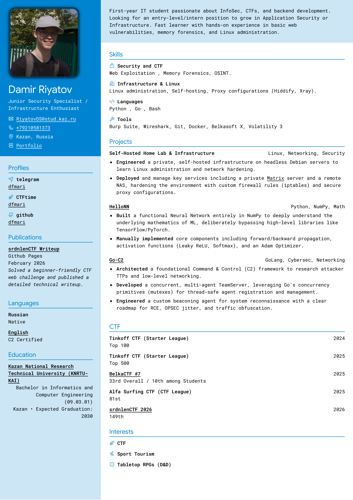
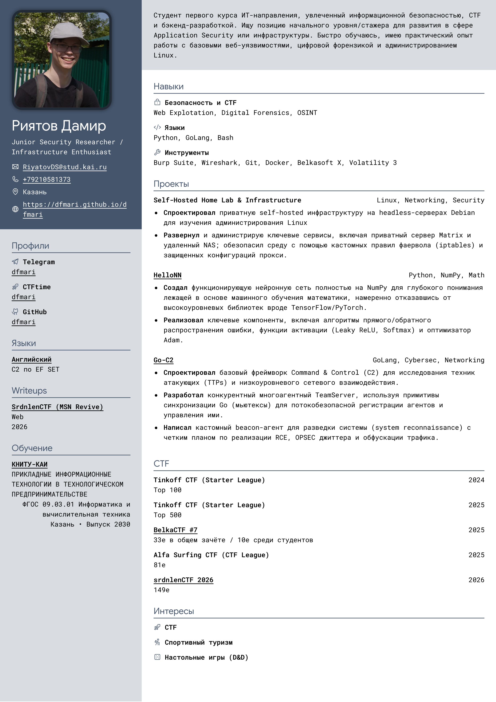

Offensive Security / AppSec
Focuses on Web Exploitation, CTF achievements (BelkaCTF Top 10), and the Go-C2 framework research.

Анализ защищенности / AppSec
Фокус на Web Exploitation, участии в CTF (BelkaCTF, Топ-10) и исследовании C2-фреймворков на Go.